别等身体亮红灯！百年春自体干细胞，为您定制细胞级抗衰防线
2026-03-04

About Us
关于百年春
《2017年中国痛风现状报告白皮书》的调查报告显示，我国高尿酸血症人数达1.7亿，痛风人数8000万以上，主要以30岁以上男性群体为主，呈现年轻化趋势。痛风已成为继“三高”后的第四高，并且在我国成为了仅次于糖尿病的第二大代谢类疾病。随着人类平均寿命的延长及饮食及生活方式的改变，痛风患者的数据呈逐年上升趋势。
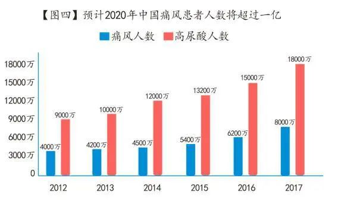
痛风在体检中最直接的指标就是尿酸浓度，持续超过420μmol/L（微摩/升）就要高度警惕患上痛风的可能。
血中尿酸浓度持续超过420μmol/L（微摩/升）就会趋于饱和状态，在血液PH值为7.4时，血清中尿酸盐就出现结晶沉积，随全身血液循环，危害各脏器和血管等。
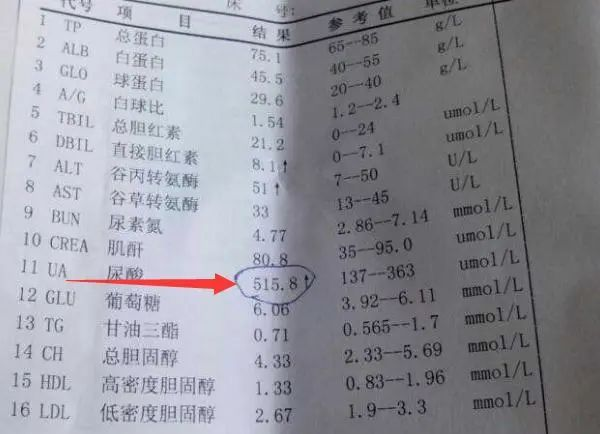
△ 尿酸值超标常提示患痛风的可能
如果超过这个数值，血清中尿酸盐就会出现结晶沉积，结晶在哪里，身体的哪里就会疼痛难忍，更可怕的是，痛风不止疼痛那么简单，还会诱发多种疾病，伤及肾脏、心脏，危害极大。
如何有效防治痛风已经成为当下临床专家们共同面临的难题，干细胞技术的兴起正在为痛风治疗带来新的选择，用干细胞临床干预痛风，能有效提升机体的免疫功能，调节并恢复身体各脏腑器官的代谢功能。
01
痛风，不止“痛”那么简单
痛风是一种常见且复杂的关节炎类型疾病，临床特点为高尿酸血症及由此而引起的痛风性急性关节炎反复发作、痛风石性慢性关节炎和关节畸形。
由于受到人体长期高尿酸血症影响，器官和组织内尿酸合成酶的基因突变，引起嘌呤代谢紊乱，使血尿酸生成过多，排泄过少，沉积在关节组织及肾脏内造成进一步损害而形成痛风。
痛风患者往往伴随着高尿酸血症、尿酸结晶、关节炎、肾脏结石等症状，严重影响生活质量。
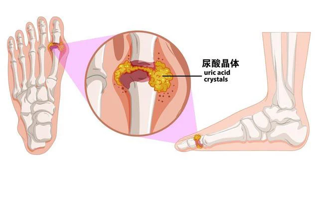
△ 体内尿酸结晶会聚集在各关节处，引起剧痛
如果体检显示尿酸升高，且同时伴有以下症状的，就要高度警惕患上痛风的可能。
·手指、脚趾或关节发生疼痛且疼痛多在夜间加剧；
·疼痛的关节极为敏感、发热、肿胀；
·关节上方皮肤呈红色或紫色；
·关节活动受限；
·疼痛缓解后，皮肤可能发痒、脱落。
当然，尿酸高也并不等于一定会患上痛风，但如若长期数值偏高，且对潜在症状不重视，发作后仅仅止痛而不对疾病本身进行治疗，久而久之就会使得晶体永久沉积，形成“痛风石”。
这些“石子”不仅会让沉积的位置肿痛、变形，时间久了还可能导致皮肤破损、溃烂，引发伤口感染，甚至可能压迫神经、影响正常的肢体功能，使患者失去正常活动的能力。
这些大量尿酸盐结晶沉积在组织、器官中，会诱发多种类型的疾病：
1、沉积在关节：引发痛风性关节炎，形成痛风石，严重者会导致关节残疾。50%以上的痛风性关节炎发生在大脚趾，反复发作后，也可能出现在足部、踝部、膝关节、肘关节等其他关节。
2、沉积在肾脏：引发痛风性肾病。严重时可能出现肾功能不全，甚至急性肾衰竭，尿毒症。
3、沉积在尿路：引起尿路结石。
4、沉积在血管：加重心血管疾病，容易诱发动脉粥样硬化，造成血管腔狭窄、阻塞，引起冠心病。研究显示，高尿酸血症患者急性心梗的发病率比正常人高26%。
5、沉积在胰腺：损伤胰岛细胞，引起胰岛素抵抗，诱发或加重糖尿病的发生或发展，加重糖尿病等代谢病。据了解高尿酸血症患者中20%~50%的人患有糖尿病。
由此可见，痛风是一种系统性疾病，会危害身体各个组织、关节，还会影响多处脏器受损，比如常见的痛风性关节炎，尿毒症、肾衰竭，泌尿系揭示，动脉硬化及冠心病等等。
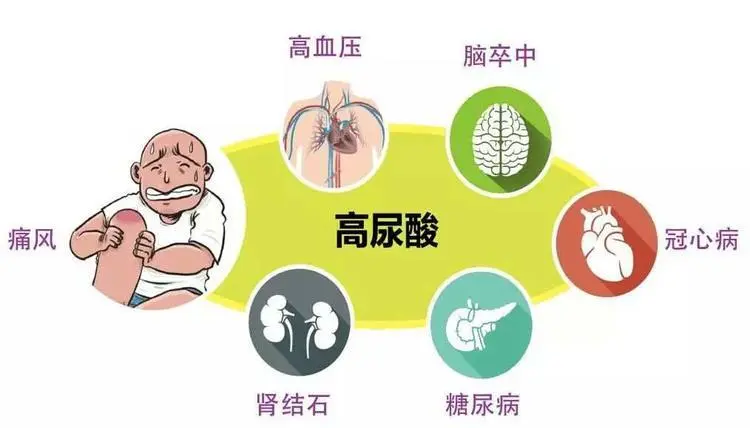
△ 痛风只是长期高尿酸的一个表症，尿酸持续不降还可能诱发多种类型疾病
据统计，痛风如果不及时治疗，将有高达95%的概率引发阳痿、早泄、肾炎、肾结石等慢性肾病；80%的患者出现糖尿病、高血压、心脏病等心血管疾病；50%患者会有严重的关节变形而导致残疾瘫痪；30%的患者引发尿毒症导致死亡。
可见，痛风不止是“痛”这么简单，还是一种终身性疾病，极难治愈。
02
干细胞干预痛风，
为痛风及并发症带来新希望
当然，治疗痛风在临床上已经比较成熟，但总体来说还是以止痛和缓解症状为主。
抛开治疗痛风不说，长期不受控制的血尿酸数值居高不下危害也有很多，甚至累及关节、组织脏器。
尿酸结晶沉积于肾脏，导致尿酸性肾病、增加肾结石发生几率、增加肾衰竭的风险；尿酸结晶刺激血管壁，导致动脉硬化，引起高血压、慢性心脏疾病、脑卒中；此外，血尿酸高是心衰的危险因素，与其发生、发展及预后均密切相关；血尿酸高也是糖尿病的危险因素，研究显示血尿酸水平每增加60μmol/L，相对新发糖尿病发病风险增加17%。
只有从根源上控制尿酸水平，调控体内炎症水平，恢复机体免疫功能，修复组织受损部位，多方管辖之下方能有望实现将痛风症状降到最低，从根源上缓解疾病进展。
而干细胞疗法的出现似乎为痛风患者带来了新希望。
利用干细胞干预痛风，能有效提升机体免疫功能，调节并恢复身体各组织脏器的代谢功能，修复并再生受损组织、血管等，将干细胞临床输入到患者病灶，用于抑制核酸的氧化分解和内源性嘌呤生成，降低尿酸指数，杜绝关节炎的发生，以防止痛风石的形成，避免患者由于长期服用药物的毒副作用对肝、肾等器官的影响，达到治疗痛风的效果。
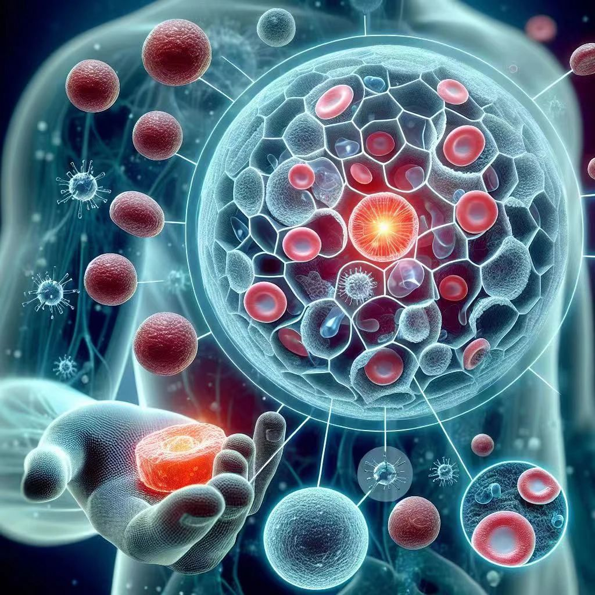

目前，干细胞治疗痛风仍处于研究和试验阶段，但一些初步的研究结果显示了干细胞在痛风治疗中的潜在作用。
1、抑制炎症反应
干细胞具有调节免疫反应和抗炎作用的能力。痛风的发作与炎症反应密切相关，尿酸结晶引起的炎症反应会导致关节疼痛和损伤。干细胞可以释放多种抗炎因子和生长因子，抑制炎症反应，减轻关节炎症症状。
2、组织修复和再生
痛风会导致关节组织损伤，包括软骨和滑膜的损伤。干细胞具有组织修复和再生的潜能，可以分化为不同类型的细胞，并促进受损组织的修复和再生。在痛风治疗中，干细胞可能有助于修复受损的关节组织，改善关节功能。
3、抑制尿酸结晶形成
尿酸结晶是痛风的主要病理特征之一。一些研究表明，干细胞可能通过影响尿酸代谢和尿酸结晶的形成来干预痛风。干细胞可以调节尿酸生成和排泄途径，通过分泌特定酶，减少体内尿酸的积累和尿酸结晶的形成，从而缓解痛风性关节炎的发作。
4、抗氧化作用
干细胞具有抗氧化作用，可以减少自由基的生成，减轻氧化应激对关节的损伤，从而减缓痛风性关节炎的进展，进一步有效防控痛风的复发几率。
关节炎损伤是痛风的主要表征之一，而干细胞干预关节炎的疗效早已获得了多项临床研究证实，2023年7月18日，行业期刊《 Immunol 》上发表了一篇关于间充质干细胞疗法改善痛风性关节炎的研究报告。
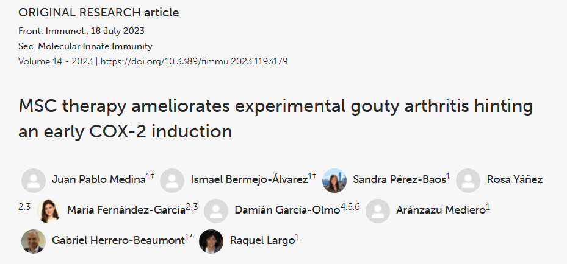
△ MSC治疗改善实验性痛风性关节炎提示早期COX-2诱导
该研究的目的是研究间充质干细胞（Ad-MSC）给药对兔注射MSU后临床炎症反应的影响，以及相关的分子机制。
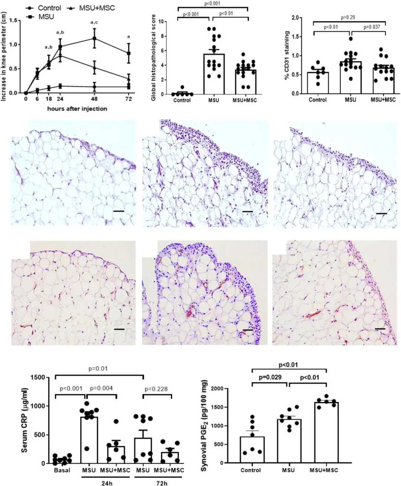
△ 通过右股动脉全身给予Ad-MSC可减轻注射MSU晶体的兔膝关节的滑膜炎症并减少全身炎症
该项研究的数据表明，MSC的全身给药可改善关节内注射MSU诱发的急性痛风模型中的关节炎症。MSC显着减少了膝关节炎症高峰期的关节肿胀。72小时后，接受治疗的动物的炎症完全消退，而未经治疗的动物仍然存在明显的关节炎症。
对于常规治疗可能性非常有限的患者，例如多病患者、老年患者、患有肾脏病理或对NSAID产生不良反应的患者，MSC给药可能是改善急性发作后关节结局的治疗机会。此外，这项工作开辟了新的途径来揭示MSC加速炎症消退的机制。
痛风常会发生肾损伤，而随着肾功能的减退痛风发生率也会增加，形成恶性循环。挽救痛风肾与治疗痛风同样重要，2017年，山西医科大学为探讨经鼠尾静脉移植的间充质干细胞（BM-MSCs）对大鼠痛风肾的影响，采用腺嘌呤200mg/kg/d灌胃4周制作了痛风肾大鼠模型，进行了干细胞对痛风肾的研究。
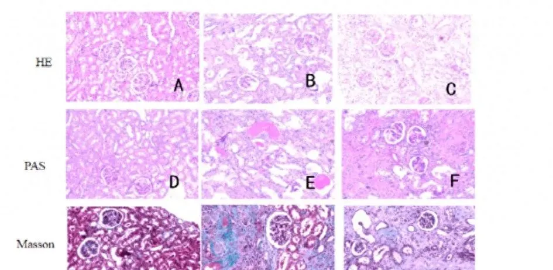
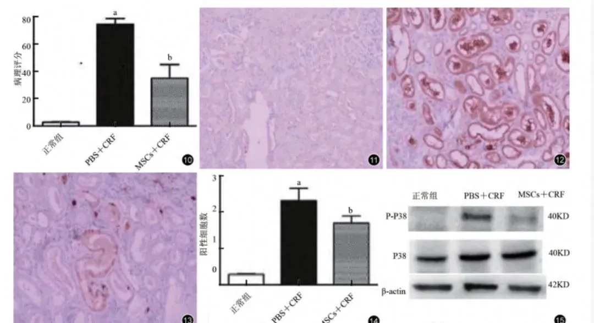
△ 移植BM-MSCs后，治疗组（BM-MSCs+CRF组）的BUN、Scr和24小时尿蛋白相比于PBS+CRF组显著地降低
实验结果显示，BM-MSCs能够促进肾脏细胞分化和生长，并能抗氧化应激反应，减少TGF-B1水平抑制EMT，基于以上作用，使慢性肾衰竭的肾功能得到改善。
应用于动物试验上的研究显示了间充质干细胞对痛风及并发症的有效预后，科学家们也在临床研究中证实了间充质干细胞的安全、有效性，让干细胞治疗痛风走向临床更进一步。
03
干细胞治疗痛风
临床案例
案例一：
对61例CDF患者采用全身和局部输注的方法干细胞移植，两周后患者的血β2-MG、尿素氮、肌酐、尿酸等指标显著下降，尿β2-MG、IgG、Alb、THP、24h尿蛋白、24h白蛋白排泄等指标也显著改变，证明患者的肾功能提高。
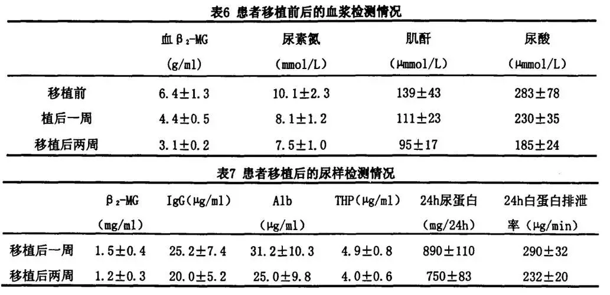
△ 患者接受干细胞移植后，尿酸水平有了显著下降
案例二：
62岁的印尼籍妇女，被诊断为胸部截瘫、慢性肾功能衰竭、糖尿病，长期肾脏受累，慢性肾功能衰竭2年，肌酥水平为11mg/dL，无小便。采用间充质干细胞移植方案。鞘内注射1.6x 107个间充质干细胞，静脉注射1.6x 107个间充质干细胞。
临床结果显示，鞘内注射和静脉注射完三周后，忠者可移动脚趾，肾功能得到明显改善，肌醉水平降至9mg/dL。8个月后，患者可以拾起腿，肌酥水平为2mg/dL，小便恢复正常。
案例三：
李先生46岁，痛风病史3年，每次发病都严格按照医嘱吃药，并注重平时的饮食，但痛风依然每年光顾，甚至频率缩短到了20几天就痛一次，这让李先生痛苦不堪，在进行干细胞治疗前的检查单上，李先生的尿酸竟然高达730μmol/L（正常范围为90—420）。
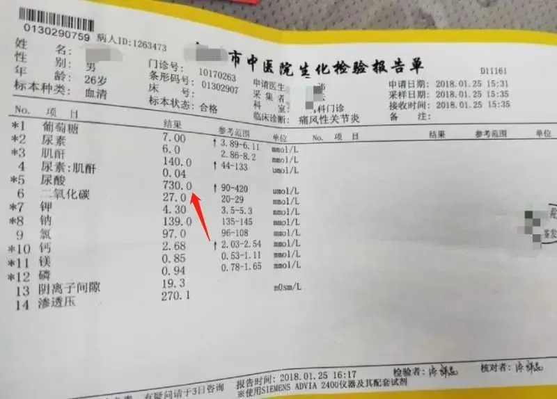
△ 接受干细胞治疗前，尿酸水平高达730μmol/L
经过首次干细胞回输之后（一个疗程有3次），李先生的尿酸水平显著下降，直接降到了444.9μmol/L，接近正常值，效果明显。
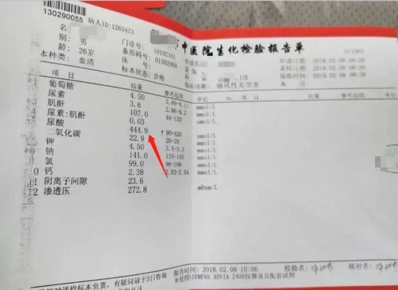
第二次干细胞回输之后，尿酸和各项重要指标都降至325.1，属于正常范围！一个疗程后，也就是三次回输后尿酸为295.0，其余各项重要指标均达到稳定状况。
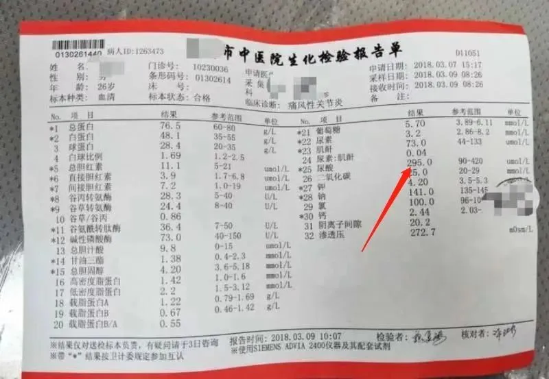
△ 仅一个疗程的输注干细胞治疗，体内尿酸水平显著下降，已在正常范围内
综上所述，干细胞在缓解痛风及其并发症方面展现出了巨大的潜力，通过修复受损组织、调节免疫系统和实现个性化治疗，干细胞安全、疗效显著、无免疫排斥反应等优势也让干细胞成为痛风及并发症治疗的新希望。
痛风“痛”起来就不要命，莫要等到疾病发生了才引起重视，到那时恐怕已为时过晚，早预防、早发现、早治疗，才是避免痛风发作的重中之重，随着干细胞技术的发展，相信会给未来痛风治疗带来更多新的选择。
21世纪是细胞治疗时代，干细胞的强大作用为100多种疾病带来了治疗可行性，同时也为饱受痛风折磨的患者带来了治愈的希望。